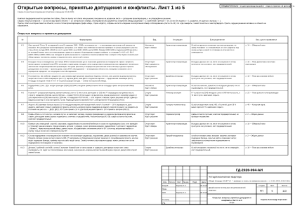
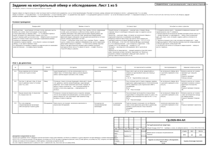
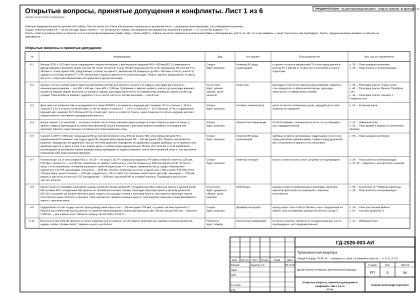
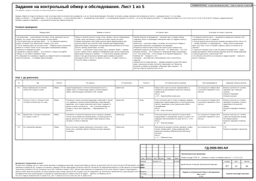

Что в альбоме ещё не проверено — и как это записано
Любой проект стоит на исходных данных, и часть из них на момент выпуска — предположения. В двух наших альбомах это, например, размеры, снятые со скана плана, и высота потолка, принятая без замера. На листах такие места записаны, а не подразумеваются: в штампе — строка «размеры со скана, не замерены» с адресом в реестре, в верхнем углу листа — «не для производства работ», у принятых и предложенных значений — знак «*», а вопросы, на которые отвечают обмер, обследование или документ, собраны в задании на контрольный обмер. Сколько листов это касается — в таблице ниже, у цифр есть ссылки на листы.
Сколько в этих альбомах открыто
Числа прочитаны с напечатанного на листах и обновляются при каждой пересборке страницы: закрыли вопрос, перевыпустили альбом — цифры изменятся. Там, где речь о листах, стоит пара «N из M»: если N меньше M, часть листов этого не содержит.
| квартира с эркерами | трёхкомнатная квартира | |
|---|---|---|
| Листов в альбоме | 121 | 94 |
| Листов с пометкой «ПРЕДВАРИТЕЛЬНО · не для производства работ» | 121 из 121 (л. 1) | 94 из 94 (л. 1) |
| Листов со строкой в штампе «размеры со скана, не замерены» | 121 из 121 (л. 1) | 94 из 94 (л. 1) |
| Листов, где знак «*» стоит у значения в чертеже | 59 из 121 (л. 13) | 60 из 94 (л. 2) |
| …из них с расшифровкой знака на этом же листе | 59 из 59 | 60 из 60 |
| …из них с названной записью реестра (К-… или ИЗ-…) помимо штампа | 58 из 59 | 54 из 60 |
| Листов с блоком «Допущения и предложения на листе» | 114 из 121 | 87 из 94 |
| Открытых вопросов в реестре | 23 (л. 6–11) | 26 (л. 6–11) |
| …из них ждут факта (обмера, обследования или документа) | 14 | 16 |
| …по видам: спорно / отсутствует / непонятно | 8 / 9 / 6 | 7 / 11 / 8 |
| Конфликтов между разделами | 1 | в сводке не названы, таблицы нет |
| Записей в реестре изменений | 19, без подписи — 6 | 17, без подписи — 5 |
| …в графе «Кто решил, подпись»: автор проекта / исполнитель | см. реестр | см. реестр |
| Пунктов в самой полной строке «Основа листа» | 10 (л. 118) | 17 (л. 91) |
| Пунктов задания на обмер | 22: на объекте — 17, документом и при закупке — 5 (л. 12–16) | 26: на объекте — 17, документом и при закупке — 9 (л. 12–16) |
| …вопросов реестра, которые задание называет закрываемыми | 17 | 17 |
| Листов с пустыми графами «Пров.» и «Н. контр.» в основной надписи | 121 из 121 | 94 из 94 |
Число в пометке листов — Квартира с эркерами: 30; Трёхкомнатная квартира: 31. У обоих альбомов оно равно сумме открытых вопросов, конфликтов и записей реестра изменений без подписи: Квартира с эркерами: 30 = 23 + 1 + 6; Трёхкомнатная квартира: 31 = 26 + 0 + 5. Формула на листе не напечатана — это сверка, которую делает сборка страницы. Основа — исходные данные, не подтверждённые обмером; на листах они идут строкой «Основа листа: …», пункты в ней разделены точкой с запятой. В таблице — число пунктов в самой полной такой строке, а не итог по всем листам.
Допущение, предложение, конфликт
Три разных способа «не знать» — и на листах они названы по-разному.
Допущение
Значение принято, но не замерено и не подтверждено. Так знак «*» расшифрован в примечании к плану:
Знак «*» — принято, не замерено и не подтверждено (замерить на объекте): К-1, К-15: Ст К1-2, Ст В1-2.
Квартира с эркерами · лист 13
Основа обоих альбомов — допущения: размеры сняты со скана плана заказчика, а не замерены. Поэтому в штампе стоит строка с адресом в реестре (листов со строкой: Квартира с эркерами: 121 из 121; Трёхкомнатная квартира: 94 из 94, включая титул):
Общая площадь 102,67* м² · * размеры со скана, не замерены (реестр — л. 6–11, ИЗ-8, К-20, К-21)
Квартира с эркерами · лист 1
Общая площадь 78,95* м² · * размеры со скана, не замерены (реестр — л. 6–11, К-13)
Трёхкомнатная квартира · лист 1
Предложение
Решение, которое предлагает проектировщик, а заказчик ещё не подтвердил. На планах такие марки помечены двойным знаком «**» — он отличается от «*» допущения, потому что действие другое: не замерить, а согласовать. Легенда говорит об этом прямо:
«**» — предложение проектировщика, заказчиком не утверждено
Квартира с эркерами · лист 20
В реестре предложение отделено от принятого. Альбом «Трёхкомнатная квартира», вопрос К-1: «Предложение, в проект не принято: умывальник П3 развернуть до 600 × 450 мм к стене В, унитаз П2 сдвинуть на 150 мм, розетки Р7 и Р8, светильник и зеркало перенести по новой раскладке.» (лист 6).
Конфликт между разделами
Расхождение между разделами проекта. Конфликтов в сводках реестра: Квартира с эркерами: 1; Трёхкомнатная квартира: не названы, таблицы конфликтов нет. Где конфликты есть, их ведёт отдельная таблица с графами «Формулировка», «Разделы», «Статус», «Кто решает», «Если решения нет», «Лист, где это проявляется» (лист 8).
Альбом «Квартира с эркерами, 13 помещений», Кф-1: «Стояки Ст К1-2, Ст В1-2 с коробом и люком попадают в проём окна Детской 2 (стена В, 8540–10040): положение стояков и окна не замерено; вопрос К-15.» (лист 40, лист 41).
Что значат знаки на листах
Размер со скана и размер с рулетки на чертеже выглядят одинаково. Знак «*» их различает: принято, не замерено — замерить на объекте. Знак «**» — предложение проектировщика, не утверждено — согласовать с заказчиком.
Расшифровка — на самом листе
Листов, где знак стоит у значения в чертеже: Квартира с эркерами: 59 из 121; Трёхкомнатная квартира: 60 из 94. Из них с расшифровкой знака на этом же листе: Квартира с эркерами: 59 из 59; Трёхкомнатная квартира: 60 из 60. Формулировка зависит от листа — вот три из них:
Знак «*» — принято, не замерено и не подтверждено (замерить на объекте): К-1, К-15: Ст К1-2, Ст В1-2.
Квартира с эркерами · лист 13
Знак «**» — предложение проектировщика, заказчиком не утверждено (согласовать с заказчиком): ИЗ-1, К-1: окно пом. 9 (стена В); ИЗ-6: дверь пом. 12 (стена Г); ИЗ-8: дверь пом. 2 (стена В) — смещение 100 → 110 мм (откос до угла был 40 мм при норме от 50 мм).
Квартира с эркерами · лист 20
* тип и мощность — по теплотехническому расчёту
Квартира с эркерами · лист 39
Знак ведёт в реестр
В штампе указаны листы реестра и номера записей (листов со строкой: Квартира с эркерами: 121 из 121; Трёхкомнатная квартира: 94 из 94). Листов со знаком, где помимо штампа названа хотя бы одна запись реестра: Квартира с эркерами: 58 из 59; Трёхкомнатная квартира: 54 из 60. Блоков «Допущения и предложения на листе» со строкой «См. лист открытых вопросов» и номерами записей: Квартира с эркерами: 114 из 114; Трёхкомнатная квартира: 87 из 87. Например:
См. лист открытых вопросов (листы 6–11)
Квартира с эркерами · лист 2
Что от него зависит — записано в задании
Пунктов задания, у которых заполнены все графы таблицы (среди них «Что пересчитается в альбоме»): Квартира с эркерами: 22 из 22; Трёхкомнатная квартира: 26 из 26. Например, от высоты потолка, которая принята и не замерена:
Вертикальные размеры альбома: развёртки, шкафы, плитка, объёмы работ; сборка шкафа-купе М16 (диагональ боковины 2668 мм против 2620 мм до потолка)
Трёхкомнатная квартира · лист 12
Как знак снимается
У величины — замером; так записано в задании на обмер. И вот что происходит после замера:
Пункт исключается из задания при следующем выпуске, когда акт подписан, значение внесено в проект и листы перевыпущены; знак «*» у величины снимается только замером.
Квартира с эркерами · лист 16
В пределах допуска пункта — принимается измеренное значение, лист перевыпускается, знак «*» снимается.
Квартира с эркерами · лист 12
Больше допуска или контрольные промеры расходятся более чем на 2 % — промер повторяют; не подтвердилось — запись в реестр изменений (дата, лист, было, стало, кто решил, подпись), работы в этом месте не начинают.
Квартира с эркерами · лист 12
Предложения проектировщика помечены тем же знаком, но с другой расшифровкой — «заказчиком не утверждено». Это решение, а не величина; на обмере проектных решений не принимают: «обмер даёт факт, решения — по реестру открытых вопросов».
От вопроса до задания на обмер
Вопрос попадает в реестр
Листы реестра — Квартира с эркерами: л. 6–11; Трёхкомнатная квартира: л. 6–11. В таблице у вопроса графы «Формулировка», «Вид», «Кто решает», «Если решения нет» и «Лист, где это проявляется»; вопросов с заполненными графами: Квартира с эркерами: 23 из 23; Трёхкомнатная квартира: 26 из 26. Рядом ведётся таблица изменений проекта после выпуска листов: дата, лист, было, стало, кто решил, подпись (записей: Квартира с эркерами: 19; Трёхкомнатная квартира: 17). Над таблицей напечатан абзац о статусе решений по пунктам таблицы:
Комплект предварительный по пунктам этих таблиц. Пока по пункту нет ответа или решения, показанное на указанном листе — допущение проектировщика, а не утверждённое решение.
Квартира с эркерами · лист 6Чего реестр не делает, сказано в его примечании:
Графа «Если решения нет» показывает состояние решения на листах; влияние на сроки и стоимость по пунктам не оценивалось.
Квартира с эркерами · лист 11Вид вопроса и «если решения нет»
Вид — «Спорно», «Отсутствует» или «Непонятно». В графе «Если решения нет» каждый вопрос описан своими словами: что остаётся на листах, пока вопрос открыт. Самые короткие формулировки с листов:
Вид В альбомах Графа «Если решения нет» Спорно 8 — квартира с эркерами
7 — трёхкомнатная квартираВысоты остаются как на листе, решение не подтверждено
Трёхкомнатная квартира · вопрос К-7, лист 6Отсутствует 9 — квартира с эркерами
11 — трёхкомнатная квартираГрафы остаются пустыми; комплект предварительный, не проверен независимо
Квартира с эркерами · вопрос К-8, лист 6Непонятно 6 — квартира с эркерами
8 — трёхкомнатная квартираОстаётся значение, принятое по исходным данным; оно не подтверждено, лист предварительный.
Квартира с эркерами · вопрос К-5, лист 6Вопрос сам говорит, чего он ждёт
Во второй строке графы «Вид» стоит «Ждёт: …» (вопросов с такой строкой: Квартира с эркерами: 23 из 23; Трёхкомнатная квартира: 26 из 26). Сводка реестра называет вопросы, ответ на которые лежит на объекте или в документах: «ждут факта объекта» — Квартира с эркерами: 14; Трёхкомнатная квартира: 16. Они собраны в задании на обмер; сводка задания перечисляет закрываемые вопросы: Квартира с эркерами: 17; Трёхкомнатная квартира: 17.
Здесь два утверждения на листах стоят рядом. Реестр: «Пункты, ждущие решения человека, на объекте не закрываются». Но в альбоме «Квартира с эркерами, 13 помещений» сводка задания называет и К-4 (пункт О-5) и К-13 (пункт О-17) и К-20 (пункты О-5, О-10) — в реестре у них «Ждёт: решения». По условиям задания обмер даёт по таким пунктам факт, а решение остаётся за реестром (л. 12–16).
Здесь два утверждения на листах стоят рядом. Реестр: «Пункты, ждущие решения человека, на объекте не закрываются». Но в альбоме «Трёхкомнатная квартира» сводка задания называет и К-18 (пункт О-6) — в реестре у них «Ждёт: решения». По условиям задания обмер даёт по таким пунктам факт, а решение остаётся за реестром (л. 12–16).
Задание на контрольный обмер
Листы задания — Квартира с эркерами: л. 12–16; Трёхкомнатная квартира: л. 12–16. У пунктов на объекте графы «Где», «Способ», «Что сделать», «Кто выполняет», «Точность», «Что пересчитается в альбоме», «Чем подтверждается», «Закрывает вопросы реестра»; у документов и закупки вместо части граф — «У кого, откуда», «Что получить», «К какому сроку». Пунктов с заполненными графами: Квартира с эркерами: 22 из 22; Трёхкомнатная квартира: 26 из 26. Способы в этих альбомах: Квартира с эркерами: обмер, обследование, вскрытие, документ, закупка; Трёхкомнатная квартира: обмер, обследование, закупка, документ. Пунктов в задании — Квартира с эркерами: 22 (на объекте — 17 [до демонтажа — 12; после демонтажа — 3; после черновых работ — 2]; документом и при закупке — 5); Трёхкомнатная квартира: 26 (на объекте — 17 [до демонтажа — 15; после демонтажа — 1; после черновых работ — 1]; документом и при закупке — 9). Исполнитель: Квартира с эркерами: 15 из 17 пунктов на объекте исполняет архитектор, в остальных — «конструктор или специализированная организация», «бригада по указанию прораба»; Трёхкомнатная квартира: 16 из 17 пунктов на объекте исполняет архитектор, в остальных — «конструктор или специализированная организация».
Кто что делает на обмере
Так распределено на листе задания (в обоих альбомах формулировки совпадают):
Архитектор — выполняет обмер, составляет акт контрольного обмера и подписывает результаты по размерам и конструкциям.
Квартира с эркерами · лист 12Прораб (отвечает за проведение) — назначает день и порядок обхода, открывает объект и освобождает помещения, ведёт это задание и реестр изменений.
Квартира с эркерами · лист 12Заказчик или его представитель — передаёт документы (план БТИ, проект дома, технические условия, паспорта), подписывает акт.
Квартира с эркерами · лист 12Технадзор — при вскрытиях и обследованиях: фото с рулеткой до закрытия.
Квартира с эркерами · лист 12Факт вносится, пункт исключается
О том, что происходит после обмера, на листах сказано дважды — в задании и в реестре:
Пункт исключается из задания при следующем выпуске, когда акт подписан, значение внесено в проект и листы перевыпущены; знак «*» у величины снимается только замером.
Квартира с эркерами · лист 16Пункт, по которому принято решение, при следующем выпуске комплекта из таблиц исключается.
Квартира с эркерами · лист 11Изменения проекта после выпуска листов записываются в таблицу реестра изменений; сейчас в ней: Квартира с эркерами: 19 записей; Трёхкомнатная квартира: 17 записей.
Что получает заказчик
Не обещание «всё учтём», а четыре вещи, которые можно открыть на листах и пересчитать.
Реестр открытых вопросов
Вопросы с графой «Кто решает», конфликты и изменения проекта с графой «Кто решил, подпись». Квартира с эркерами: листы 6–11; Трёхкомнатная квартира: листы 6–11.
Задание на контрольный обмер
Что замерить, вскрыть и получить до заказа материалов: у пунктов есть графы «Точность» и «Чем подтверждается». Квартира с эркерами: листы 12–16; Трёхкомнатная квартира: листы 12–16.
Блок «Допущения и предложения на листе»
Листов с блоком: Квартира с эркерами: 114 из 121; Трёхкомнатная квартира: 87 из 94. Блока нет на листах: Квартира с эркерами: титульный лист, открытые вопросы, принятые допущения и конфликты (6); Трёхкомнатная квартира: титульный лист, открытые вопросы, принятые допущения и конфликты (6).
Пометка о статусе комплекта
Листов с пометкой: Квартира с эркерами: 121 из 121; Трёхкомнатная квартира: 94 из 94. Комплект с открытыми пунктами помечен как предварительный:
ПРЕДВАРИТЕЛЬНО · не для производства работ · открыто пунктов: 30 (реестр — л. 6–11)
Квартира с эркерами · лист 1
ПРЕДВАРИТЕЛЬНО · не для производства работ · открыто пунктов: 31 (реестр — л. 6–11)
Трёхкомнатная квартира · лист 1

Лист 6Квартира с эркерами. Открытые вопросы, принятые допущения и конфликты. Лист 1 из 6
Лист 12Квартира с эркерами. Задание на контрольный обмер и обследование. Лист 1 из 5
Лист 6Трёхкомнатная квартира. Открытые вопросы, принятые допущения и конфликты. Лист 1 из 6
Лист 12Трёхкомнатная квартира. Задание на контрольный обмер и обследование. Лист 1 из 5Чего этот механизм не обещает
- Не оценивает сроки и деньги по пунктам: «влияние на сроки и стоимость по пунктам не оценивалось» — так записано в примечании к реестру (Квартира с эркерами: л. 11; Трёхкомнатная квартира: л. 11).
- Не заменяет замер: пока он не сделан, в штампе остаётся строка «размеры со скана, не замерены» (листов со строкой: Квартира с эркерами: 121 из 121; Трёхкомнатная квартира: 94 из 94).
- Не принимает решения за заказчика: на обмере проектных решений не принимают, вопросы, ждущие решения человека, закрываются по реестру.
- Не доказывает полноту: страница считает напечатанное на листах и не проверяет, что знак «*» стоит у каждого неподтверждённого значения.
- Не делает комплект окончательным: страница пересказывает записи на листах и ничего не закрывает; пометка «не для производства работ» остаётся на листах (Квартира с эркерами: 121 из 121; Трёхкомнатная квартира: 94 из 94).
- Не выдаёт себя за проверенный: графы «Пров.» и «Н. контр.» основной надписи пусты (листов с пустыми графами: Квартира с эркерами: 121 из 121; Трёхкомнатная квартира: 94 из 94), и это записано в реестре изменений (альбом «Квартира с эркерами, 13 помещений», ИЗ-18, лист 11; альбом «Трёхкомнатная квартира», ИЗ-13, лист 10): «Графы «Пров.» и «Н. контр.» остаются пустыми: независимой проверки и нормоконтроля проекта не было, автор проекта сам себе их не подписывает. Комплект выпускается предварительным: пока нет подписи проверяющего и нормоконтролёра, отличных от разработчика, он не считается окончательным.»
- Не обещает, что все решения утверждены автором проекта: в графе «Кто решил, подпись» записи реестра изменений разделены так (автор проекта / исполнитель): Квартира с эркерами: см. реестр; Трёхкомнатная квартира: см. реестр.
Все открытые вопросы этих альбомов
Начало формулировки, вид, кто решает и листы, где вопрос проявляется. Полный текст — на листах.
Квартира с эркерами, 13 помещений: 23 открытых вопроса и 1 конфликт
| № | Что неизвестно (начало формулировки с листа) | Вид / ждёт | Кто решает | Листы |
|---|---|---|---|---|
| К-1 | Окно детской 2 (поз. 9) на наружной стене В: привязки 1580…3080 в источниках нет — в экспликации скана окна этой комнаты не показано. Это допущение проектировщика, центровка, а не замер: окно 1500 мм поставлено примерно по центру наружного… | Непонятно Ждёт: обмера | Архитектор-планировщик | л. 20 |
| К-3 | Несущие стены не определены (нет плана БТИ и техзаключения): до их получения демонтаж не планируется. Нужно: запросить проект дома и поэтажный план БТИ, установить серию дома; несущие стены и допустимость вмешательства определяет… | Отсутствует Ждёт: документа, обследования | Архитектор-планировщик | л. 21 |
| К-4 | Гостиная (поз. 11): мебели в модели нет, расстановка ждёт решения заказчика. Отделка, потолок, свет, розетки и декор выполнены; акцентная стена А L481 возвращена (см. К-7); картина ДК20, ваза ДК21 и подсветка картины — предложение конвейера… | Отсутствует Ждёт: решения | Дизайнер интерьера | л. 24 |
| К-5 | Гардеробная 1 (поз. 12) в натуре трапеция 2320/2132/1400, в модели прямоугольник той же площади: нужен контрольный обмер углов. | Непонятно Ждёт: обмера | Архитектор-планировщик | л. 20 |
| К-6 | Розетка Р7 (стиральная машина, ванная комната) стоит в 72 мм от угла при норме от 150 мм. Р7 возвращена на прежнее место: стена В, смещение 2543 мм, высота 949 мм — норма ПУЭ 6.6.30 (не выше 1 м) выполнена, флага решения нет; конвейер… | Спорно Ждёт: решения | Инженер-электрик | л. 29 |
| К-7 | Акцент L481 занимает больше порога 15 % площади поверхностей на акцентной стене А Гостиной — 16 % (проверка по доле акцента, замечание открыто намеренно). Красить плоскость целиком (нужна поддержка в модели), перенести акцент на предметы (в… | Спорно Ждёт: решения | Колорист-комплектатор | л. 55 |
| К-8 | Графы «Пров.» и «Н. контр.» в штампе пусты: их заполняет человек, подписи проверяющего и нормоконтролёра автор проекта не ставит; для выдачи нужны разные подписанты, отличные от разработчика. Решение автора (ИЗ-18): графы остаются пустыми… | Отсутствует Ждёт: решения | Нормоконтролёр | л. 2 |
| К-10 | Прямые углы помещений с кухней, санузлами, гардеробными и встроенной мебелью по скану не подтверждены (скос стен приведён к ступеням): ванная комната, тёмная комната, детская 1, коридор, кухня, прихожая-коридор, гардеробная 2, детская 2… | Отсутствует Ждёт: обмера | Архитектор-планировщик | л. 20 |
| К-12 | Состав подрядчиков и поставщиков (кто покупает и кто монтирует радиаторы, подоконники, двери, розетки) от заказчика не получен. Принята типовая схема частного ремонта (ИЗ-17): материалы и оборудование покупает заказчик по спецификациям… | Отсутствует Ждёт: решения | Прораб-координатор | л. 2 |
| К-13 | Детская 2: рабочий стол М36 у стены Б получает боковой свет от окна справа от сидящего; для правши лучше свет слева подтвердить, кто сидит за столом (правша или левша), иначе решить зеркальной расстановкой (нужен перенос двери) либо второй… | Спорно Ждёт: решения | Дизайнер интерьера | л. 24 |
| К-14 | Из чего стены под навесными шкафами — Ванная комната (стена Б, М8), Кухня (стена А, М24–М26), Гардеробная 2 (стена В, М33)? Проекта дома нет, на скане материал и толщина не читаются. Нужно обследование: материал основания определяет крепёж… | Отсутствует Ждёт: вскрытия | Мебельщик | л. 79, л. 81, л. 82 |
| К-15 | Стояки Ст К1-2 и Ст В1-2 (в данных (9400; 6300) и (9560; 6300), короб и люк) попадают в проём окна Детской 2 по стене В (8540–10040): совместить с радиатором под окном и шторами нельзя. Привязку осей стояков от двух стен никто не замерял; в… | Спорно Ждёт: обмера, затем решения | Инженер ВК (вода, канализация) | л. 40, л. 41, л. 20 |
| К-17 | Ведущий цвет — Paper F497 на стенах и потолке — занимает больше 80 % площади поверхностей в Тёмной комнате (87 %), Гардеробной 2 (89 %), Гардеробной 1 (86 %) и Балконе 1 (85 %): второй цвет почти не читается. Это цвета автора проекта.… | Спорно Ждёт: решения | Колорист-комплектатор | л. 55 |
| К-18 | Вытяжка М25 встроена в навесной модуль на отметке 1550 мм: её низ над электрической варочной панелью 610 мм, а фартук 650 мм при практике 450–600 мм. Модель вытяжки не выбрана, паспорта нет, допустимая высота над варочной неизвестна.… | Спорно Ждёт: данных закупки, затем решения | Мебельщик | л. 78 |
| К-19 | Привязка угла помещения «Гостиная» (поз. 12 скана; в примечании проекта названо «зал») принята в точке (10670; 3470) мм — это допущение, не замер: по пиксельной привязке скана угол может лежать примерно на 700 мм левее. От этой точки по оси… | Непонятно Ждёт: обмера | Архитектор-планировщик | л. 20 |
| К-20 | Наружные скошенные стены (в натуре под 45°) заменены на планах ступенями: движок описывает только ортогональную геометрию. Гостиная — три ступени, площадь по модели 14,55 м² против ≈17 м² по реконструкции контура; Гардеробная 1 … | Спорно Ждёт: решения | Архитектор-планировщик | л. 20, л. 24 |
| К-21 | Все размеры сняты с размерных цепочек растрового скана заказчика, контрольного обмера нет. Площади помещений и «Общая площадь 102,67 м²» в штампе каждого листа — расчётные по модели, не обмерные: итог зависит от ступеней вместо скоса (К-20)… | Отсутствует Ждёт: обмера | Архитектор-планировщик | л. 2, л. 20 |
| К-22 | Окно Гостиной (пом. 11) на стене В, часть 2: остекление показано по обмерному скану, размеры 1500×1600 мм и подоконник 900 мм приняты типовыми, не замерены. Нужен контрольный обмер окна: положение, ширина, высота, подоконник. | Непонятно Ждёт: обмера | Архитектор-планировщик | л. 20 |
| К-23 | Две розетки выше 1 м от пола остаются предложением проектировщика, решения автора нет: Р21 (вытяжка М25, 2200 мм, в модуле за съёмной панелью, Кухня) и Р27 (слаботочный щит ЩС, 1600 мм, Прихожая-коридор). Основание — назначение розетки… | Спорно Ждёт: решения | Инженер-электрик | л. 29, л. 32 |
| К-24 | Высота потолка 2700 мм принята: источника (замер, проект дома) в материалах объекта нет. От неё зависят вертикальные размеры альбома: развёртки, шкафы и встроенная мебель, плитка, потолки, объёмы работ. Замерить высоту на объекте в каждом… | Непонятно Ждёт: обмера | Архитектор-планировщик | л. 20 |
| К-25 | Разрешённая мощность 15 кВт принята, технических условий в материалах объекта нет; расчётная мощность 11,2 кВт. Сверить с техническими условиями. | Непонятно Ждёт: документа | Инженер-электрик | л. 34 |
| К-26 | Артикулы изделий отделки не выбраны. Инженерная доска (пом. 1, 3, 4, 6, 8, 9, 11, 12), керамогранит пола (пом. 2, 5, 7, 10, 13), керамогранит стен санузла и ванной (пом. 2, 10) и фартука кухни (пом. 6), плинтус МДФ (пом. 1, 3–9, 11, 12)… | Отсутствует Ждёт: данных закупки, затем решения | Отделочник | л. 46, л. 47, л. 48, л. 49, л. 50, л. 52, л. 55, л. 57, л. 86, л. 118, л. 120 |
| К-27 | Модели встраиваемой техники кухни не выбраны: холодильник (М20), духовой шкаф (М22) и посудомоечная машина (М27) заданы описанием «аналог по характеристикам» — без производителя, серии и кода. Размеры ниш и вентзазоры взяты по типовой схеме… | Отсутствует Ждёт: данных закупки, затем решения | Мебельщик | л. 78, л. 79 |
| Кф-1 | Стояки Ст К1-2, Ст В1-2 с коробом и люком попадают в проём окна Детской 2 (стена В, 8540–10040): положение стояков и окна не замерено; вопрос К-15. | конфликт между разделами | — | л. 40, л. 41 |
Полная формулировка, последствия «если решения нет» и все листы — на листах 6–11 альбома.
Трёхкомнатная квартира: 26 открытых вопросов
| № | Что неизвестно (начало формулировки с листа) | Вид / ждёт | Кто решает | Листы |
|---|---|---|---|---|
| К-1 | Ванная (2250 × 1970 мм): после утверждения стиральной машины с вертикальной загрузкой 400 × 600 мм (ИЗ-11) замечания по дверце машины и боковому зазору унитаза П2 сняты. Остаются: в зоне 750 мм перед ванной П1 стоит умывальник П3; розетка… | Спорно Ждёт: решения | Инженер ВК (вода, канализация) | л. 39, л. 29 |
| К-2 | Артикул плитки и калибр партии (фактический размер плитки) для ванной и санузла 2 не заданы: раскладка рассчитана по номинальным размерам — пол 600 × 600 мм, стены 600 × 1200 мм. Требование к закупке: выбрать плитку и до раскладки измерить… | Отсутствует Ждёт: данных закупки, затем решения | Плиточник | л. 46, л. 48, л. 49 |
| К-3 | Доли цвета по поверхностям не укладываются в схему 60/30/10 и её варианты: ведущий цвет занимает 33 % в спальне 1, 38 % в спальне 2 и 32 % в кухне-гостиной (нужно от 50 %); акцент в спальне 1 — 19 %, в спальне 2 — 18 % (больше 15 %); в… | Спорно Ждёт: решения | Колорист-комплектатор | л. 52 |
| К-4 | Вход в санузел 2 (с унитазом) — из кухни-гостиной: так по плану заказчика (ниша у входа на плане открыта в кухню-гостиную, в проекте закрыта перегородкой по линии низа прихожей). Вход в помещение с унитазом принято устраивать из коридора… | Спорно Ждёт: решения | Архитектор-планировщик | л. 21, л. 24 |
| К-5 | Санузел 2 (1675 × 1580 мм): перед душем П6 до противоположной стены 630 мм (нужно 750); зону перед унитазом П7 и умывальником П8 занимает сам поддон душа П6; боковой зазор умывальника П8 — 150 мм (нужно 200). Принять как проектное решение… | Спорно Ждёт: решения | Инженер ВК (вода, канализация) | л. 39 |
| К-7 | Розетки выше 1 м от пола (норма ПУЭ, п. 6.6.30 — не выше 1 м). Р7 (стиральная машина) и Р8 (фен) в ванной стояли на 1200 мм, Р33 (фен, санузел 2) — на 1100 мм: назначение не требует такой высоты, розетки опущены до 1000 мм (запись ИЗ-9).… | Спорно Ждёт: решения | Инженер-электрик | л. 29, л. 32 |
| К-8 | Проект кухни не утверждён заказчиком: выводы кухонной техники (мойка М7, посудомоечная М14, варочная панель и духовой шкаф М8, вытяжка М15, холодильник М6) приняты по типовой расстановке техники. Раскладка гарнитура принята автором… | Отсутствует Ждёт: документа, обмера, затем решения | Мебельщик | л. 63, л. 29 |
| К-9 | Гардеробная состоит из двух частей; проход между ними через стык — 280 мм (нужно 700 мм), он сужает систему хранения Г1. Принять как технический проход нельзя: по практике проектирования технический проход не уже 700 мм, меньше 600 мм … | Спорно Ждёт: решения | Дизайнер интерьера | л. 26, л. 61 |
| К-11 | Высота потолка 2700 мм принята: на плане заказчика она не указана. От неё зависят вертикальные размеры альбома (развёртки, шкафы, плитка, объёмы работ). Замерить высоту на объекте. | Непонятно Ждёт: обмера | Архитектор-планировщик | л. 21 |
| К-12 | Две конструкции плана заказчика не определены: утолщение стены 190 × 1360 мм в гардеробной у спальни 2 (вентблок или пилон) и элемент 1470 × 160 мм на линии простенка кухни-гостиной (пилон, балка или барная стойка). Элемент 1470 × 160 мм на… | Непонятно Ждёт: обследования | Архитектор-планировщик | л. 21, л. 26 |
| К-13 | Размеры сняты со скана плана заказчика по размерным цепочкам, контрольный обмер на объекте не выполнялся; толщины стен приняты 250 мм (наружные) и 150 мм (перегородки), на плане 85–190 мм. В двух местах принятое значение отличается от числа… | Непонятно Ждёт: обмера | Архитектор-планировщик | л. 21 |
| К-14 | Разрешённая мощность 15 кВт принята по типовой квартире, технических условий в материалах объекта нет; расчётная мощность 11,8 кВт. Сверить с техническими условиями. | Непонятно Ждёт: документа | Инженер-электрик | л. 34 |
| К-15 | Графы «Пров.» и «Н. контр.» в штампе пусты: их заполняет человек, подписи проверяющего и нормоконтролёра разработчик проекта не ставит; для выдачи нужны подписанты, отличные от разработчика. Решение автора (ИЗ-13): графы остаются пустыми… | Отсутствует Ждёт: решения | Нормоконтролёр | л. 2 |
| К-16 | Сдача разделов специалистами для этого проекта не оформлена (нет файлов решений по ролям). В альбоме нет листов «Пожарная безопасность» и «Звукоизоляция», программы испытаний и приёмки, допуска ГИПа. Решить, какие из этих разделов входят в… | Отсутствует Ждёт: решения | Главный инженер проекта (ГИП) | л. 2 |
| К-17 | Положение стояков условно, на объекте не замерено: стояки канализации и холодной воды — в коробе Ш1 248 × 459 в углу ванной и в стене-пилоне Ш2 270 мм между санузлом 2 и кухней (по плану заказчика). От положения стояков зависят привязки… | Непонятно Ждёт: обмера | Инженер ВК (вода, канализация) | л. 39, л. 40 |
| К-18 | Санузел 2: ниша 1600 × 1840 мм у входа закрыта перегородкой, ниша 660 × 260 мм (уступ по плану) — фальш-стеной с рамой инсталляции: проектное решение, на плане заказчика ниша у входа открыта в кухню-гостиную. От закрытия зависят размеры… | Спорно Ждёт: решения | Архитектор-планировщик | л. 39 |
| К-19 | Модель стиральной машины П4 не выбрана. Условие закупки (решение автора проекта, ИЗ-11): вертикальная загрузка, габарит в плане 400 × 600 мм (ширина 400 мм вдоль стены Б, глубина 600 мм), высота по паспорту (в расчёте 900 мм). Машина с… | Отсутствует Ждёт: данных закупки, затем решения | Инженер ВК (вода, канализация) | л. 39, л. 41 |
| К-20 | Несущие стены не определены: проект дома и план БТИ в материалах объекта отсутствуют, тип и серия дома неизвестны, техническое заключение о несущих конструкциях не выполнялось. До заключения все существующие стены считаются несущими… | Отсутствует Ждёт: документа, обследования | Архитектор-планировщик | л. 22 |
| К-21 | Прямые углы помещений с кухней, санузлами, гардеробной и встроенной мебелью по скану не подтверждены: спальня 1, ванная, гардеробная, прихожая, кухня-гостиная, санузел 2. Нужен контрольный обмер: длины сторон и обе диагонали каждого… | Отсутствует Ждёт: обмера | Архитектор-планировщик | л. 21, л. 26 |
| К-22 | Состав подрядчиков и поставщиков (кто покупает и кто монтирует радиаторы, подоконники, двери, розетки) от заказчика не получен. Принята типовая схема частного ремонта (ИЗ-14): материалы и оборудование покупает заказчик по спецификациям… | Отсутствует Ждёт: решения | Прораб-координатор | л. 2 |
| К-23 | Артикулы изделий отделки не выбраны. Инженерная доска (пом. 1, 3, 4, 6, 8), керамогранит пола (пом. 2, 5, 7), керамогранит стен (пом. 2, 7), керамогранит фартука кухни (пом. 6) и плинтус МДФ (пом. 1, 3, 4, 5, 6, 8) заданы характеристиками … | Отсутствует Ждёт: данных закупки, затем решения | Отделочник | л. 46, л. 47, л. 48, л. 49, л. 50, л. 51, л. 53, л. 67, л. 90, л. 93 |
| К-24 | Модели встраиваемой техники кухни не выбраны: холодильник (М6) и посудомоечная машина (М14) заданы описанием «аналог по характеристикам» — без производителя, серии и кода. Размеры ниш и вентзазоры взяты по типовой схеме на 60 см, а не по… | Отсутствует Ждёт: данных закупки, затем решения | Мебельщик | л. 63, л. 64 |
| К-25 | Скрытые двери Д-2 (спальня 1 и спальня 2), Д-3 (ванная) и Д-4 (гардеробная) заданы размером проёма 800×2100 со скана плана заказчика; проёмы существующие, расширять их до технического заключения (К-20) нельзя. Скрытый блок ставят в проём с… | Непонятно Ждёт: обмера, затем решения | Архитектор-планировщик | л. 24, л. 86 |
| К-26 | Входная дверь Д-1 существующая. По плану заказчика полотно открывается наружу, в общий коридор: на плане дверей и обмерном плане дуга показана наружу, как в данных объекта. Направление открывания на объекте не проверено и не выбирается за… | Непонятно Ждёт: обследования, затем решения | Архитектор-планировщик | л. 24 |
| К-27 | Окна ОК-1…ОК-4 в проекте существующие: демонтажа и замены окон нет ни на плане демонтажа, ни в ведомости объёмов работ; ведомость заполнения проёмов фиксирует их размеры, а не заказ новых блоков. Подоконная доска и глубина откоса не заданы… | Непонятно Ждёт: обмера, затем решения | Архитектор-планировщик | л. 24 |
| К-28 | Сроки поставки и изготовления изделий с длинной поставкой не получены ни от одного поставщика: скрытые двери Д-2…Д-5, кухонный гарнитур, встраиваемая техника, керамогранит, инженерная доска, сантехника и инсталляции, встроенная мебель по… | Отсутствует Ждёт: данных закупки, затем решения | Прораб-координатор | л. 17, л. 93, л. 87 |
Полная формулировка, последствия «если решения нет» и все листы — на листах 6–11 альбома.
Что обычно спрашивают
Можно ли по такому альбому вести работы?
Комплект для этого не предназначен: на листах напечатано «ПРЕДВАРИТЕЛЬНО · не для производства работ» (листов с пометкой: Квартира с эркерами: 121 из 121; Трёхкомнатная квартира: 94 из 94), а в задании на обмер записано, что заказываемое по размеру из задания до закрытия пункта не заказывают. Что именно зависит от пункта, видно в графе «Что пересчитается в альбоме».
На листах: Квартира с эркерами: задание — л. 12–16; Трёхкомнатная квартира: задание — л. 12–16.
Кто делает контрольный обмер?
По листу задания: архитектор выполняет обмер, составляет акт контрольного обмера и подписывает результаты по размерам и конструкциям; прораб отвечает за проведение — назначает день и порядок обхода, открывает объект и освобождает помещения; заказчик или его представитель передаёт документы и подписывает акт; технадзор — при вскрытиях и обследованиях. В графе «Кто выполняет» архитектор указан в Квартира с эркерами: 15 из 17 пунктов на объекте; Трёхкомнатная квартира: 16 из 17 пунктов на объекте.
На листах: Квартира с эркерами: л. 12–16; Трёхкомнатная квартира: л. 12–16.
Что, если замер не совпал с проектом?
В пределах допуска пункта принимается измеренное значение, лист перевыпускается, знак «*» снимается. Если разница больше допуска или контрольные промеры расходятся более чем на 2 %, промер повторяют; не подтвердилось — запись в реестр изменений (дата, лист, было, стало, кто решил, подпись), и работы в этом месте не начинают. Если затронуты несущая стена, стояк, вентканал или мокрая зона, об этом сразу сообщают владельцу раздела и ГИПу (главному инженеру проекта). На объекте устно ничего не согласуется: каждое решение — записью в реестр с подписью.
На листах: Квартира с эркерами: л. 12–16; Трёхкомнатная квартира: л. 12–16, блок «Если факт не совпал с проектом».
Точно ли знак «*» стоит у каждого неподтверждённого значения?
Эта страница такого не доказывает. Она считает то, что напечатано на листах: листов, где знак «*» или «**» стоит у значения в чертеже: Квартира с эркерами: 59 из 121; Трёхкомнатная квартира: 60 из 94; из них с расшифровкой знака на этом же листе: Квартира с эркерами: 59 из 59; Трёхкомнатная квартира: 60 из 60. Полноту можно проверить только чтением листов и реестра; у каждого вопроса реестра есть графа «Лист, где это проявляется».
На листах: Квартира с эркерами: л. 6–11; Трёхкомнатная квартира: л. 6–11.
Откуда на этой странице числа?
Страница собирается из самих выпусков. Числа читаются из напечатанного на листах текста: сводок реестра и задания, строк их таблиц, пометки «ПРЕДВАРИТЕЛЬНО» и строки штампа. Перед публикацией они сверяются: строки таблиц со сводкой, пометка листов с реестром. Если что-то не сходится, страница не собирается. Перевыпустили альбом — пересобралась и страница.
Свой проект — с того же места
Заполните бриф за 7 минут: размеры, фото, пожелания. Через 48 часов у вас альбом; предоплаты нет, альбом остаётся у вас в любом случае.
Автор проекта — дизайнер-архитектор Кырлан Александр. В основной надписи листов этих альбомов указана его фамилия; телефона и почты на листах нет — они на странице контактов.